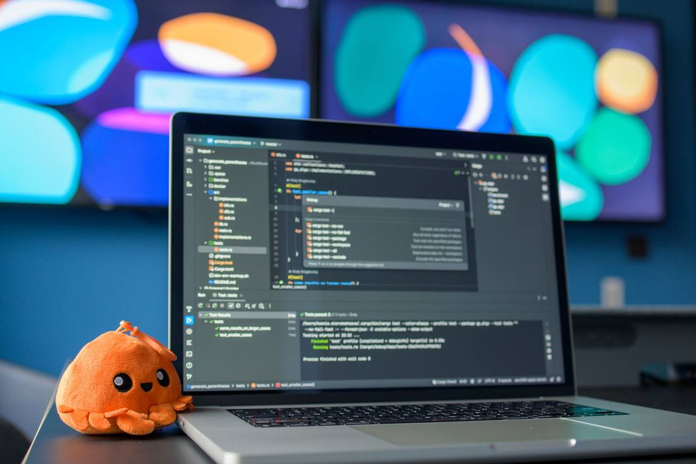

Top Coding Agents Finish Fewer Than 8% of Tasks in a Simulated Workplace
SWE-CoWork, a benchmark posted on arXiv on November 15, 2026 and covered on November 23, placed eleven AI coding agents inside simulated software teams. GPT-6 Astra finished 8 of 101 assignments (7.92%) and Claude Opus 5.5 finished 7 (6.93%), though both passed about 63% of tests for individual changes. Even with complete requirements supplied upfront, full completion stayed flat, pointing to requirement tracking and verification, not code generation, as the bottleneck.

- 01THE BENCHMARK — November 15, 2026: researchers at TokenWave AI post SWE-CoWork on arXiv. The benchmark comprises 101 development assignments across 101 real repositories, 11 programming languages and 12 application domains, each set in a simulated engineering organisation with 26 colleagues.
- 02THE TEST — Eleven models are tested under an eight-hour budget per assignment. Agents start from a brief handoff and must recover requirements distributed across colleagues and workplace records, 82% of which are held only by colleagues.
- 03THE RESULT — GPT-6 Astra completes 8 of 101 assignments (7.92%) and Claude Opus 5.5 completes 7 (6.93%); no other model completes more than one. Both leaders satisfy about 63% of fail-to-pass tests, exposing the gap between partial implementation and complete delivery.
WHAT HAPPENEDWhat Happened
Leading AI coding agents pass most of the tests for individual code changes yet finish almost none of the job end to end, according to a benchmark posted on arXiv on November 15, 2026, and covered by The Decoder on November 23. SWE-CoWork, built by researchers at TokenWave AI, drops agents into a simulated software company with colleagues, project boards and chat histories, and asks them to work like digital employees across 101 development assignments drawn from 101 real repositories.
The two leading models satisfied about 63% of the tests for requested changes but completed fewer than 8% of assignments in full. OpenAI's GPT-6 Astra finished eight of 101 assignments, a 7.92% pass rate; Anthropic's Claude Opus 5.5 finished seven, or 6.93%. None of the other nine models evaluated completed more than one assignment.
The gap comes from the workplace, not the code. About 82% of each assignment's requirements live only with simulated colleagues, so the agent has to find the right person, ask the right question and reconcile conflicting information before writing anything. Completion has a strict meaning: the agent must pass every test for the new behaviour and preserve existing behaviour in the same run, within an eight-hour budget.
WHY IT MATTERSPartial progress is high. Finished delivery is rare.
The benchmark separates two things that headline scores usually merge: writing a patch that passes some tests, and delivering a finished change that survives every check. The two leaders clear roughly 63% of fail-to-pass tests, which is why they look strong on conventional coding benchmarks, yet fewer than one in twelve assignments reaches the finish line.
That split is the point of the exercise. SWE-bench style tests hand the agent a clean issue and a patch to write; SWE-CoWork hands it a short handoff, 26 colleagues with bounded knowledge, versioned documents and a project board, and makes communication part of the job.
THE EXPERIMENTEven perfect instructions did not finish the job.
A second experiment gave GPT-6 Astra and Seed Evolving the complete requirements at the outset. Astra's pass rate on tests for new behaviour rose from 62.91% to 78.84%, but its full-assignment completion rate stayed at 7.92%. Knowing exactly what to build improved partial delivery and left implementation and verification gaps untouched.
The trajectory analysis shows failures at every stage. Claude Opus 5.5 routed a mean of 93% of first questions to the accountable owner, yet obtained only 64% of the requirements held by colleagues. Deferred questions went unfollowed, implementations stayed incomplete even after requirements were acquired, and 31% of requirements the model reported as completed failed their corresponding tests.
WHAT IS NEXTThe benchmark reframes what reliable delegation needs.
The authors frame reliable delegation as tracking a requirement through clarification, implementation, checking and the final handoff. In that frame, a completion message and a verified delivery are separate pieces of evidence, and code review plus acceptance checks still decide whether a change meets the assignment.
Watch for runs of newer models on the same benchmark, including GPT-6.2, and for whether agent frameworks close the gap by improving requirement tracking rather than code generation alone.
THE SHIFTWhat Changed
SIGNAL JUDGMENT — ANALYSISAgents Can Write the Patch. Finishing the Job Is a Different Skill.
Tokenta Signal's judgment: the benchmark draws the line the industry has been blurring. Passing tests for a requested change is a coding skill; recovering requirements from colleagues, reconciling conflicts, verifying the result and handing it back is an organisational skill, and the frontier models fail at the second one more than nine times out of ten. Until agents track a requirement from clarification to verified delivery, their output stays a draft that a human has to close.
WHAT REMAINS UNCERTAINWhat Remains Uncertain
EVIDENCEEvidence
SWE-CoWork, posted on arXiv on November 15, 2026, placed eleven AI coding agents inside simulated software teams with colleagues, project boards and incomplete handoffs. The two leading models, OpenAI's GPT-6 Astra and Anthropic's Claude Opus 5.5, satisfied about 63% of tests for individual changes but completed fewer than 8% of the 101 assignments end to end.
PRIMARY SOURCESPrimary Sources
- arXiv: SWE-CoWork: Benchmarking Coding Agents as Digital Employees in Organizations
https://arxiv.org/abs/2611.20218 - AIstify: AI Coding Agents Finish Under 8% of Tasks in Workplace Benchmark
https://aistify.com/swe-cowork-ai-coding-agents-workplace-task-completion/ - Dev.to: AI Coding Agents Ace Benchmarks but Finish Under 8% of Simulated Workplace Tasks
https://dev.to/shakeelahmed/ai-coding-agents-ace-benchmarks-but-finish-under-8-of-simulated-workplace-tasks-heres-the-gap-l2f